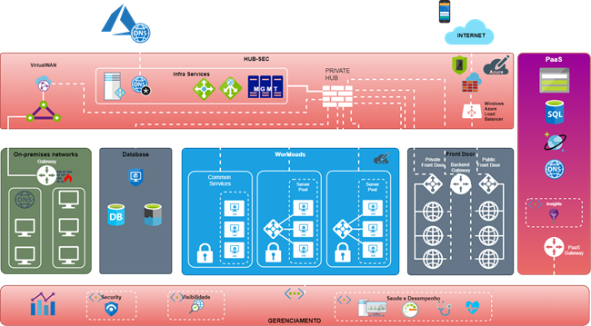
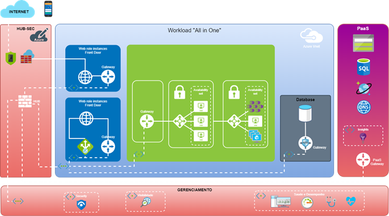
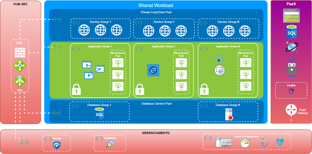
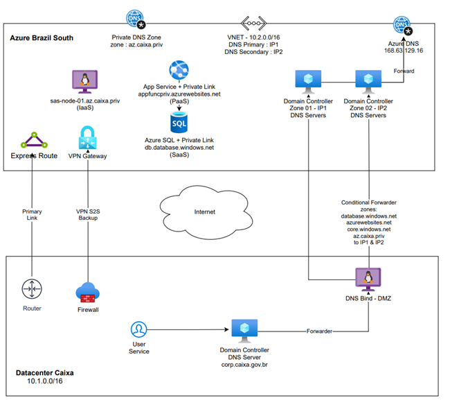

Azure
Tecnologias
O ambiente dos provedores de nuvem disponibiliza tecnologias para gestão dos recursos em camada de abstração sem a necessidade de configuração direta dos equipamentos físicos. Em geral são disponibilizadas interfaces WEB contendo todos os parâmetros para estabelecimento dos serviços de acordo com a necessidade do produto.
- Esta tecnologia é provida por recursos de SDN (Software Defined Network) onde os ativos de rede do ambiente são configurados indiretamente por um portal web ou software, não requerendo conhecimento da sintaxe de comandos utilizados pelos equipamentos.
- Este recurso permite a administração do ambiente de forma mais amigável e ainda com possibilidade de automações baseadas em chamadas de APIs.
Em virtude destas características os elementos arquiteturais foram revistos para melhor adequação ao cenário de ambiente em Nuvem.
- Dentro dos Datacenters on premisse é utilizado um modelo de segmentação por ambientes e camadas, aderente a uma arquitetura multicanal para aplicações WEB.
- Neste modelo são criados ambientes de acordo com o canal de acesso do usuário (internet, intranet e extranet). Esta segmentação auxilia no isolamento e segurança do Datacenter.
- As aplicações são implantadas em 3 camadas, seguindo um modelo tradicional de desenvolvimento WEB onde os recursos da solução são separados e desenvolvidos conforme sua função (apresentação, regras de negócio e dados). -Com isto, a arquitetura do Datacenter se acopla diretamente neste modelo de desenvolvimento permitindo total aderência da solução com a infraestrutura fornecida.
- Ocorre que as tecnologias nativas de ambientes em Cloud, tais como conteiners e microserviços, exigem um novo paradigma de ambiente e, portanto, o modelo de 3 camadas foi revisto e substituído por um novo conceito denominado HUB-SPOKE.
Utilização do Conceito HUB-SPOKE
O modelo HUB-SPOKE baseia-se na organização da forma de conexão entre os diversos elementos da arquitetura possibilitando a centralização dos controles dos fluxos entre as diversas cargas de trabalho (workloads) e usuários.
Este modelo é direcionado a empresas que necessitam diversidade de canais de acesso e criação de múltiplos workloads interconectados.
Assim evita-se a necessidade de conexão de cada workload aos demais e a cada canal de acesso de usuário ampliando a capacidade de segurança destas interconexões, uma vez que o controle de fluxo entre os workloads e canais de acesso é feito centralizadamente.
Benefícios do Modelo HUB-SPOKE na Azure
Adoção deste modelo considerou, também, algumas questões de tomada de decisão documentadas pela Microsoft, as quais reproduzimos abaixo:
- Economia de custos e gerenciamento eficiente: Centralize serviços que podem ser compartilhados por várias cargas de trabalho, como NVAs (dispositivos de virtualização de rede) e servidores DNS. Com um único local para serviços, a IT pode minimizar os recursos redundantes e o esforço de gerenciamento.
- Limites de assinatura: Grandes cargas de trabalho baseadas em nuvem podem exigir o uso de mais recursos do que uma única assinatura do Azure contém. Redes virtuais de carga de trabalho de emparelhamento de assinaturas diferentes para um hub central podem superar esses limites.
- Separação de preocupações: Você pode implantar cargas de trabalho individuais entre equipes de TI centrais e equipes de workload.
PRINCÍPIOS
PRINCÍPIOS ARQUITETURAIS
A arquitetura do ambiente deve obedecer aos seguintes princípios:
- Alta disponibilidade
- Alto desempenho
- Baixa latência
- Segurança
ALTA DISPONIBILIDADE
O funcionamento dos serviços hospedados no ambiente de nuvem Azure deve ser ininterrupto.
Para compor este cenário deve-se considerar a adoção de ambiente redundante para suporte às aplicações com, no mínimo, duas zonas de disponibilidade.
Para sistemas críticos sugere-se a utilização de ambiente para recuperação de desastre (duas regiões), com a ressalva que no Brasil nem todos os recursos estão disponíveis para esta modalidade.
Para viabilizar a estrutura de disaster-recovery no Brasil, os recursos utilizados devem considerar a disponibilidade dos mesmos no ambiente da Azure em Brazil Southest.
ALTO DESEMPENHO: BAIXA LATÊNCIA
O ambiente da Microsoft Azure permite a implantação de solução em múltiplas zonas e regiões, inclusive em Datacenters fora do Brasil.
Ainda que sejam opções com grandes atrativos financeiros, há que se observar o grande aumento de latência quando se utiliza serviços nestes locais (fora do Brasil).
Assim, não é recomentado o uso destes locais para workloads que atuam em serviços críticos de alta demanda ou que requeiram integração on line com sistemas em ambiente on premisses.
Quanto aos serviços que necessitam de integração com o ambiente on premisses, deve-se buscar soluções que minimizam “application turns”, ou seja, que reduzam a quantidade de consultas entre os ambientes dentro de cada transação de negócio.
O reuso de conexões TCP (conexões persistentes) é um exemplo de mecanismo para mitigar “application turns” uma vez que isto evita a necessidade de negociação TCP e SSL em cada consulta/transação.
SEGURANÇA
Quanto ao quesito segurança, deve-se observar segregação dos ambientes com acesso público ou externos dos ambientes de acesso puramente internos.
Tal requisito visa minimizar a possibilidade de acesso indevido por usuários de ambientes externos às estruturas de serviços da rede privada da Caixa.
Os serviços de gerenciamento dos ativos, acesso administrativo à servidores e demais recursos, devem ser feitos a partir de redes privadas.
As regras de acesso poderão contar com o uso de soluções de gateway de acesso (jump server) para reduzir a quantidade de regras necessárias. Ressalta-se que o acesso à estes gateways também deve ser feito através de redes privadas.
ARQUITETURA DEFINIDA
Para atendimento aos requisitos apresentados e de acordo com as tecnologias existentes nos ambientes da Microsoft Azure, foi definida a seguinte arquitetura:

Características de HUB
Esta arquitetura está baseada numa estrutura HUB-SPOKE. A HUB é responsável por agrupar os recursos infraesrutura (DNS, jump server, balanceadores), segurança (firewall) e gerenciamento, independentemente a qual workload atende.
A HUB também é responsável pela estrutura de interconexão entre os diversos recursos do ambiente bem como para acesso de/para o ambiente on premisses e acessos dos usuários aos serviços.
Os recursos de PaaS também podem ser ativados na estrutura da HUB, no caso em que estes permitam a associação a VNET privada.
Nesta estrutura encontram-se as conexões externas privadas (express route, vpn site-to-site), públicas (internet) e previsão de uso de SDWAN e vpn de usuário, que são acoplados ao recurso de VirtualWAN.
Deve ser criada ao menos dois HUB-firewall, uma para atendimento ao ambiente privado e outro para serviços com acesso via Internet.
Para o ambiente de desenvolvimento deve ser criado um HUB-firewall específico que será utilizado para conexão desses recursos.
Todas as VNETs da instalação devem possuir peering com o HUB-firewall correspondente (privado, público ou desenvolvimento) de forma a permitir a criação da política de acesso necessária às mesmas.
Os recursos de HUB para produção devem ser ativados em ao menos duas zonas de disponibilidade.
Serviços públicos (internet) – Apresentação/Frontdoor
A disponibilização de serviços públicos pela internet deve ser feita através de uma estrutura de apresentação, preferencialmente utilizando os recursos de Frontdoor.
Os recursos que possuem acesso direto da internet não devem ser compartilhados para acesso a serviços ou recursos da estrutura privada.
Acesso administrativo
Os acessos administrativos aos recursos da instalação devem ser feitos através de conexões privadas utilizando os jump-servers.
Os jump-servers devem ser instalados em VNET da HUB com peering para o HUB-firewall de produção privado.
Os jump-servers de desenvolvimento devem ser separados dos de produção, fazendo peering com o HUB-firewall de desenvolvimento.
Gerenciamento
Os recursos e aplicações de gerenciamento devem ser ativados na estrutura de HUB, podendo ser segmentadas conforme aplicação em uma ou mais VNETs.
As conexões com estes recursos devem ser feitas através do hub-firewall correspondente.
Cargas de trabalho (Workloads)
Os workloads são representados com tom azul na figura da arquitetura.
Para ativação de serviços no ambiente Microsoft Azure foram estruturados dois modelos gerais de workload, o All in One e o Shared.
O modelo All in One é direcionado a serviços de grande volume e que possuem nenhuma (ou pouca) interação com outros workloads ou com o ambiente on premisses.
O modelo Shared deve ser aplicado de forma preferencial, uma vez que o mesmo permite a otimização de recursos reduzindo a necessidade de novas alocações em cada projeto.
All in One Workload
A topologia base para este tipo de workload é apresentada abaixo:

Como se pode observar, neste caso são incluídos diversos recursos dentro da própria estrutura do workload, tais como balanceadores, conteiners, soluções de PaaS, banco de dados, dentre outros.
Vale ressaltar que, como estes recursos são alocados de forma exclusiva, acabam onerando a instalação tanto no quesito custeio quanto para sua operação.
O acesso a outros recursos da instalação tais como demais workloads ou ambiente on premisses, deve ser feito através do HUB-firewall da HUB.
Shared Workload
A topologia base para este tipo de workload é apresentada abaixo:

Neste caso, diversos recursos são compartilhados entre diferentes workloads, permitindo assim um melhor aproveitamento do ambiente.
Esta estrutura sugere o uso de VNETs mais amplas cujos serviços serão separados por subnets de acordo com a funcionalidade.
Podem ser adotadas segmentações conforme necessidade do serviço, tais como acesso, aplicação e dados, possibilitando uma melhor visão organizacional da solução implantada.
Sempre que possível, deve-se utilizar recursos providos pela HUB, tais como serviços de balanceamento e segurança.
A interconexão entre as subnets deve ocorrer através do HUB-firewall assim como as conexões com outras VNETs, workloads ou com o ambiente on premisse.
Serviço de DNS
Para o funcionamento adequado do serviço de DNS permitindo a resolução de nomes do ambiente Caixa na Azure e vice-versa, deve-se considerar a ativação de servidores de DNS com controladores de domínio da Caixa no ambiente de HUB na Azure.
Estes servidores terão a réplica da árvore da Caixa permitindo a resolução local dos nomes dos domínios privados da Caixa diretamente naquele ambiente.
A resolução inversa, quando o acesso for proveniente da Caixa para o ambiente Azure, a resolução de nome será feita através de encaminhamento condicional (conditional forwarder) do subdomínio correspondente pelo DNS Bind da Caixa.
A arquitetura deste serviço de infraestrutura pode ser observada abaixo:

Os nomes apresentados são apenas para entendimento, podendo ser alterados conforme padronização de nomes do ambiente.
A fim de evitar acoplamento dos serviços com o ambiente da Azure, sempre que possível, deve-se preferencialmente utilizar FQDNs de propriedade de Caixa (.caixa, .caixa.gov.br) de forma que os sistemas que farão uso destes serviços não fiquem “presos” a este ambiente.
As VNETs devem ser configuradas para utilizar estes DNS privados (PRIVATE DNS) criados na Azure, de forma que tanto os endereços internos da Azure quanto os externos (on premisses) sejam resolvidos corretamente.
Roteamento
Uma vez que a arquitetura adotada está baseada em HUB-SPOKE, as conexões entre as VNETs deverão ser feitas através do HUB-Firewall.
Para que o tráfego de uma VNET consiga chegar ao destino em outra VNET deve-se criar roteamento através da funcionalidade de tabela de roteamento (route-table) associada à VNET ou subnet.
Além do roteamento deverão ser criadas as políticas de acesso de acordo com os serviços utilizados na conexão.
Quanto ao acesso ao ambiente on premisse, este recurso não é necessário uma vez que o peering feito com o HUB possui transitividade. Assim, uma vez feito o peering entre a VNET e a HUB, as rotas já são repassadas automaticamente.
Ressaltamos, porém, que o ambiente on premisse é protegido por firewall local, requerendo ajustes nas suas políticas para ativação de novos serviços.
Ambiente de Desenvolvimento – Políticas Gerais
O ambiente de desenvolvimento deve ser segregado do ambiente de produção de forma a evitar que algum deploy ou ação neste ambiente coloque em risco a produção.
Desta forma, nenhuma VNET poderá ser compartilhada entre produção e desenvolvimento.
O HUB privado de desenvolvimento deverá ser diferente do HUB privado de produção.
O acesso a este ambiente deve seguir as premissas do ambiente produtivo, ocorrendo apenas a partir de rede privada e com o uso de servidores de gateway (jump-servers) na sua HUB.
Histórico da Revisão
| Data | Versão | Descrição | Autor |
|---|---|---|---|
| 26/11/2021 | 1.0 | Criação do documento | Luiz Gilmar P de S e Silva |